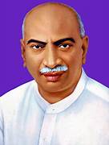
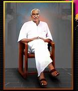
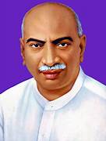
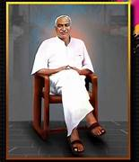
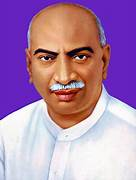
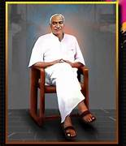

.jpg) 



Perunthalaivar Kamarajar, affectionately known as the “Kingmaker” and the “Man of the Masses,” was a remarkable leader whose life and contributions left an indelible mark on the history of Tamil Nadu and India as a whole. Born on July 15, 1903, in Virudhunagar, Tamil Nadu, Kamarajar’s journey from a humble background to becoming a revered political figure and a beloved leader is a testament to his unwavering commitment to public service and social welfare.Kamarajar’s leadership was defined by his vision for a progressive and egalitarian society. He firmly believed that education was the cornerstone of social development. During his tenure as the Chief Minister of Tamil Nadu from 1954 to 1963, he implemented a series of far-reaching reforms in the state’s education system. His contributions included the introduction of the Mid-day Meal Scheme, which aimed to provide nutritious meals to school children, thereby improving attendance and nutrition levels. Education was not the only focus of Kamarajar’s visionary leadership. He also worked tirelessly to uplift the underprivileged and marginalized sections of society. His commitment to social justice led to the formulation of policies and initiatives that aimed at reducing economic disparities and improving the quality of life for all citizens.


Kumaraswami Kamaraj, popularly known as K. Kamaraj, was a great Indian freedom fighter, politician, and statesman who played a significant role in the political and educational development of Tamil Nadu. He was born on July 15, 1903, in Virudhunagar, Tamil Nadu. Though he could not complete his formal education due to poverty, he grew up to become a visionary leader with deep concern for the poor and underprivileged. Kamaraj actively participated in the Indian freedom movement, inspired by Mahatma Gandhi. He was imprisoned several times by the British for taking part in protests and movements. After independence, Kamaraj became the Chief Minister of Tamil Nadu (then Madras State) in 1954. During his rule, he focused on development, especially in education, agriculture, and industrial growth. He introduced free and compulsory education and started the midday meal scheme, which helped increase school enrollment and reduce dropouts among poor children. He was a very simple and honest leader who led by example. Despite holding high office, he lived a humble life without seeking personal gain. Kamaraj also played a crucial role in national politics and was called the “Kingmaker” for helping choose two Prime Ministers — Lal Bahadur Shastri and Indira Gandhi — after Nehru’s death. K. Kamaraj was awarded the Bharat Ratna posthumously in 1976, India’s highest civilian award, in recognition of his service to the nation. His life and legacy continue to inspire generations of Indians.